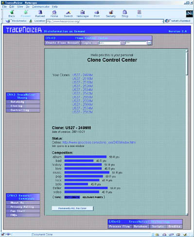

| Klone kontrollieren
und killen TraceNoizer ist ein webbasierendes Tool. Zusätzlich zu den Mechanismen zur Herstellung eines Klones, welche in "Datenkörper klonen" besprochen werden, erlaubt TraceNoizer auch eine gezielte Entfernung eines Klons. Das bedeutet, dass die HTML-Dateien, welche den Klon darstellen, gelöscht werden. Ein druck auf den "Kill this Clone"- Button genügt, um den Klon zu entfernen. Aber da Dateien von Suchmaschinen archiviert werden können, ist der Klon also nicht wirklich "tot" oder komplett aus dem Internet entfernt. Es ist also schwierig abzuschätzen, wie genau das Löschen ("Killen") eines Klons den Datenkörper beeinflusst, da diese Masse von Daten ständig weiterprozessiert wird . Die Dateien können zwar , nachdem sie gelöscht wurden, nicht mehr angeschaut werden, sind aber vielleicht noch in Archiven vorhanden.  |